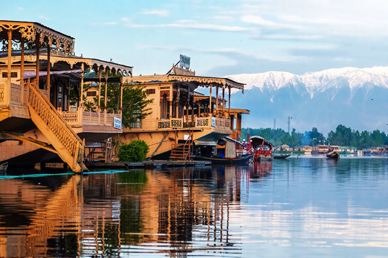
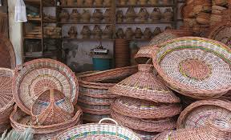
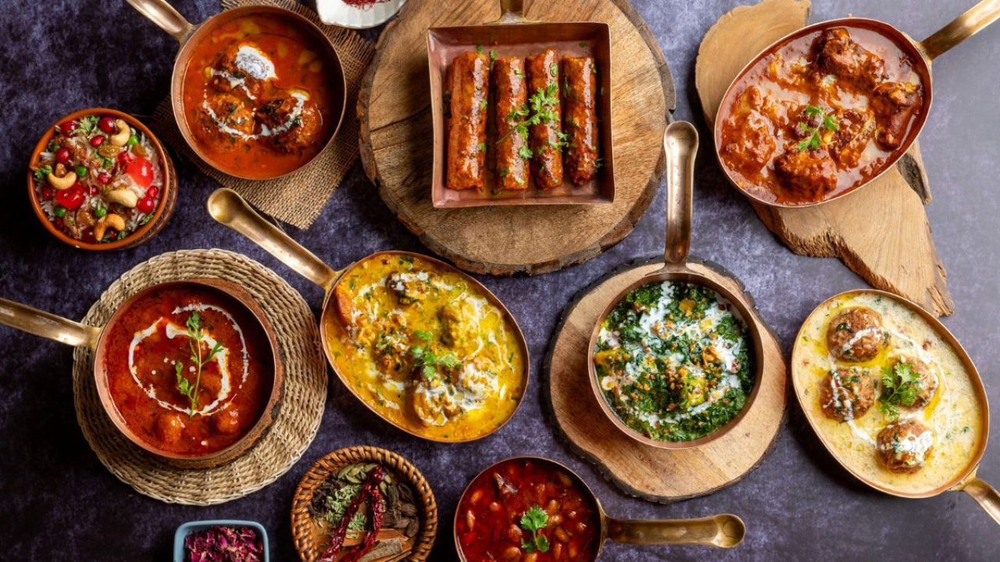

Sitting on the banks of the Jhelum River and gathered around the Dal and Nigeen lakes, Srinagar has welcomed travellers, poets and emperors for over two thousand years. It is a place where daily life still moves by boat and where time seems to slow.

Founded in the 6th century, Srinagar grew into an important stop on the ancient Silk Route. Mughal emperors fell in love with the valley and built the grand terraced gardens that still bloom today. The British later introduced the famous houseboats — because they were not allowed to buy land, they built floating homes instead.
Today that history lives on in the carved cedar houseboats, the bustling old-city bazaars and the warm hospitality of the Kashmiri people.

Srinagar is the home of some of the world's finest handicrafts. Pashmina shawls, hand-knotted silk carpets, papier-mâché and walnut-wood carving are passed down through generations of artisan families.
The valley's culture is just as rich — a gentle blend of Persian, Central Asian and Indian influences felt in its music, poetry, dress and the legendary 36-course Wazwan feast.

Food in Kashmir is an event. The Wazwan is a ceremonial banquet of slow-cooked meats, aromatic rice and delicate spices, traditionally served on a shared copper plate called a trami.
Warm yourself with a cup of pink noon chai or fragrant saffron kahwa — grown in the purple crocus fields just outside the city.
From quiet mornings on the lake to adventures in the mountains, there is a Srinagar for every kind of traveller.
Browse Experiences